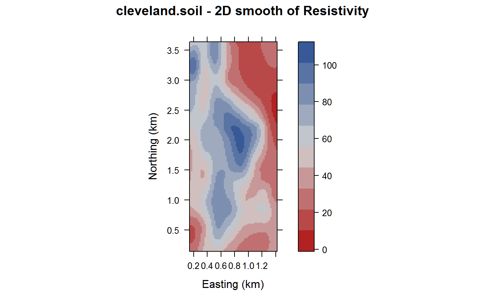

cleveland.soil.RdSoil resistivity in a field
A data frame with 8641 observations on the following 5 variables.
northingy ordinate
eastingx ordinate
resistivitySoil resistivity, ohms
is.nsIndicator of north/south track
trackTrack number
Resistivity is related to soil salinity.
William Cleveland, (1993), Visualizing Data. Electronic version from StatLib: http://lib.stat.cmu.edu/datasets/
Cleaned version from Luke Tierney http://homepage.stat.uiowa.edu/~luke/classes/248/examples/soil
library(agridat) data(cleveland.soil) dat <- cleveland.soil # Similar to Cleveland fig 4.64 ## libs(latticeExtra) ## redblue <- colorRampPalette(c("firebrick", "lightgray", "#375997")) ## levelplot(resistivity ~ easting + northing, data = dat, ## col.regions=redblue, ## panel=panel.levelplot.points, ## aspect=2.4, xlab= "Easting (km)", ylab= "Northing (km)", ## main="cleveland") # 2D loess plot. Cleveland fig 4.68 sg1 <- expand.grid(easting = seq(.15, 1.410, by = .02), northing = seq(.150, 3.645, by = .02)) lo1 <- loess(resistivity~easting*northing, data=dat, span = 0.1, degree = 2) fit1 <- predict(lo1, sg1) libs(lattice) redblue <- colorRampPalette(c("firebrick", "lightgray", "#375997")) levelplot(fit1 ~ sg1$easting * sg1$northing, col.regions=redblue, cuts = 9, aspect=2.4, xlab = "Easting (km)", ylab = "Northing (km)", main="cleveland.soil - 2D smooth of Resistivity")# ----------------------------------------------------------------------------#> #>#> #> #>